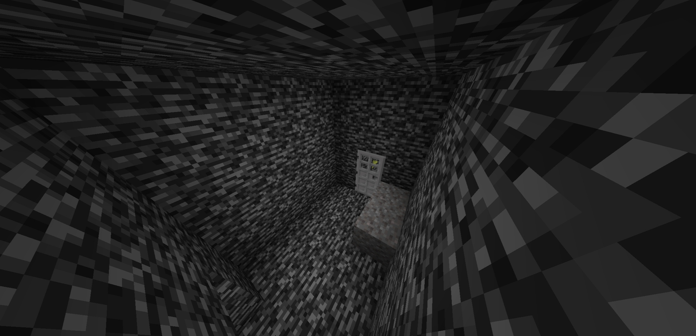
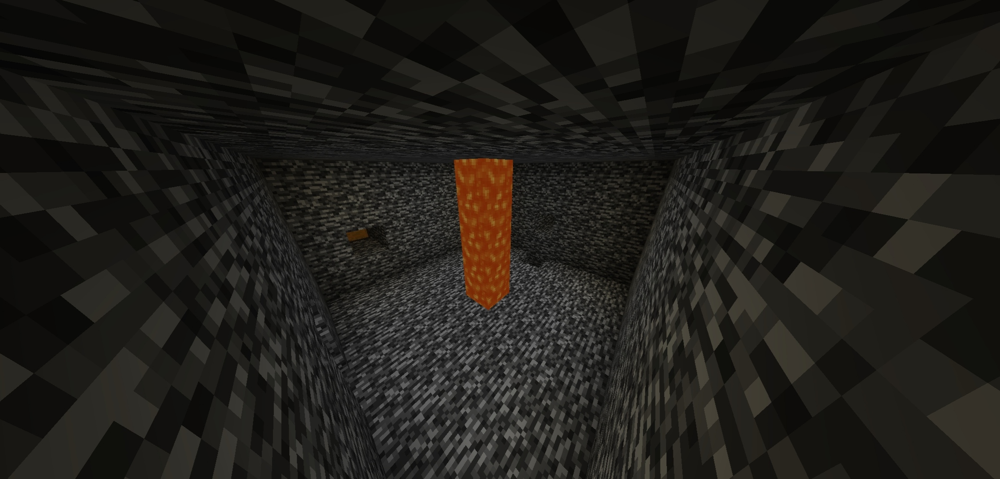
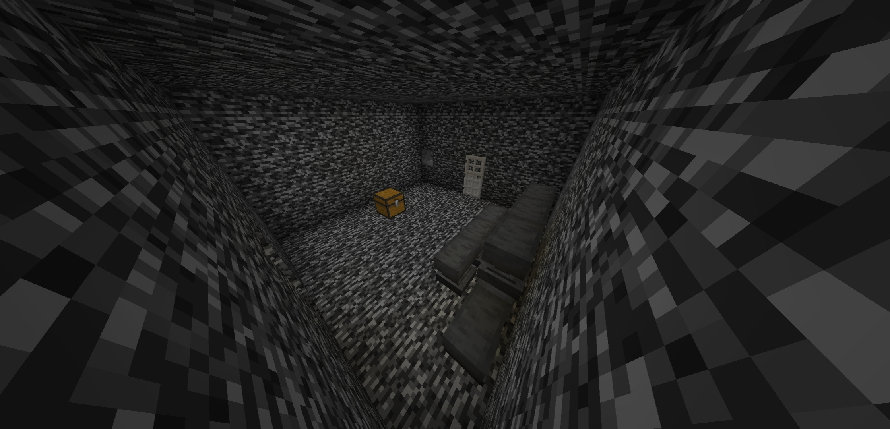
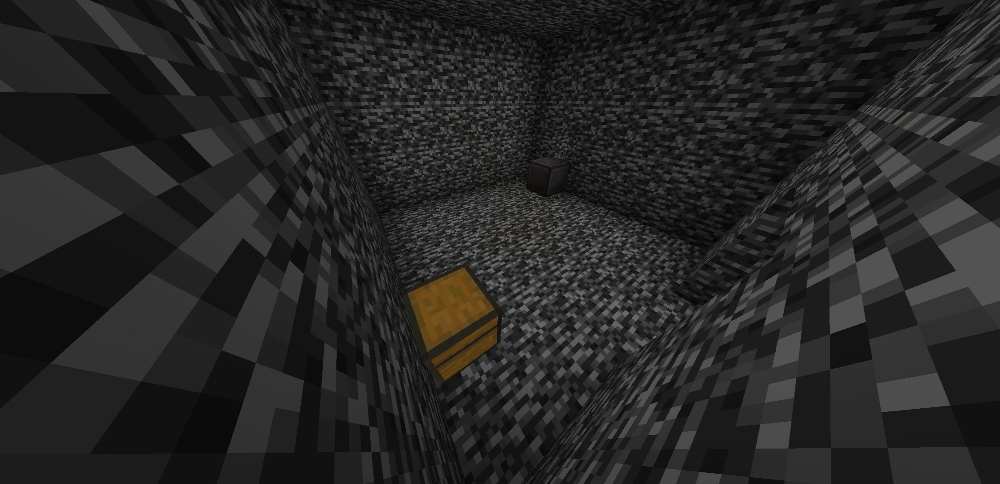

Escape From Bedrock Prison v1
Description:
Oh no! You are trapped in a mysterious prison, bedrock prison! Find the way out of this mysterious prison, bedrock prison!
Support Language:
- Indonesian
- English
Note:
- YOU CAN Make a Video for YouTube or other social media platforms, WITH GIVING CREDIT to the original creators
- YOU CAN NOT CLAIM THIS MAP AS YOUR OWN
- DO NOT EDIT/REDISTRIBUTE THIS MAP OR ANY PART OF IT TO CLAIM AS YOUR OWN WORK
How To Escape:
If you can't passing the obstacle, you can watch this:
How To Escape From Bedrock Prison
Screenshots:




How To Install?
- 1. Select the file you want to download.
- 2. Click "I'm not a robot"
- 3. Click "Free Access with Ads
- 4. Click "Discover article"
- 5. Wait until 15 seconds and click "X"
- 6. Click "Discover Topics"
- 7. Choose what you want to read
- 8. Wait until 15 seconds and click "X"
- 9. Click "Continue to ... "